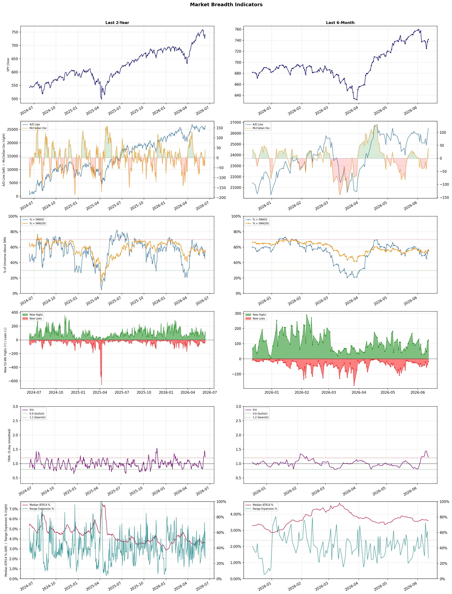

A daily research map of market breadth, industry rotation, and technical setups
| Item | Read |
|---|---|
| Regime | Selective Risk-On |
| Risk posture | Selective |
| Indices | QQQ 721.34 (+0.6% today) |
| Universe | 1,699 stocks tracked · 125 new 52-week highs · 30 active swing setups |
| Breadth | 55.6% of tracked stocks are above SMA50 — neutral range, new highs exceed new lows (125 vs 17) |
| Leadership | Trucking, REIT - Hotel & Motel, and Healthcare Plans |
| Weakest groups | Uranium, Gold, and Other Precious Metals & Mining |
Use this report to prioritize research and chart review; validate entries, stops, liquidity, earnings, and risk before acting.
| Item | Read |
|---|---|
| Primary read | Selective Risk-On regime with Selective risk posture. |
| Research queue | RXO, WERN, KNX, ODFL, XPO |
| Leadership focus | Trucking, REIT - Hotel & Motel, and Healthcare Plans |
| Caution list | Uranium, Gold, and Other Precious Metals & Mining |
| Review prompt | Check extension risk, chart location, fundamentals, valuation, and earnings before using any research row. |
| Item | Read |
|---|---|
| Primary read | 0 active risk warnings; use screen output as watchlist input only. |
| Bullish screens | APLE, DRH, PEB, CVS, HUM |
| Bearish screens | none |
| Alerts / levels | Automated trigger, stop, ATR, liquidity, reward/risk, and event-risk levels are pending future enrichment. |
| Review prompt | Open the linked chart, define trigger and invalidation, then check liquidity and event risk independently. |
Risk Posture: Selective — screen backdrop supports selective research in leading industries
Metric context: McClellan below -50 = elevated selling pressure; below -100 = washout territory. Range Expansion = share of stocks with daily range above their 20-day average. Signal Density = share of tracked names appearing in signal screens.
| Breadth Date | % > SMA50 | % > SMA200 | New Highs | New Lows | McClellan | Median Range | Avg Range | Median ATR14 | Range Expansion | Signal Density |
|---|---|---|---|---|---|---|---|---|---|---|
| 2026-06-12 | 55.6% | 56.6% | 125 | 17 | 39.4 | 2.8% | 3.4% | 3.6% | 27.1% | 1.9% |

Prior comparison date: June 11, 2026
| Metric | Prior | Current | Change |
|---|---|---|---|
| Regime | Selective Risk-On | Selective Risk-On | unchanged |
| Risk Posture | Selective | Selective | unchanged |
| % > SMA50 | 52.5% | 55.6% | +3.2 pts |
| % > SMA200 | 55.4% | 56.6% | +1.1 pts |
| New Highs | 116 | 125 | +9 |
| New Lows | 36 | 17 | +19 |
Top-10 industries entering: none. Top-10 industries leaving: none. New multi-signal long setups: ACMR, AMAT, APLE, ASB, BTSG, C, CFFN, CSX, CVS, DRH. New multi-signal short setups: none.
| Status | Tickers | Read |
|---|---|---|
| Added | ACMR, AMAT, APLE, ASB, BTSG, C, CFFN, CSX | New technical screen matches vs prior report. |
| Removed | AMRX, BFLY, CAKE, CLOV, CNK, CRDO, FBP, FOX | No longer present in today's technical screen matches. |
| Still Active | BRX, HUM, ICHR, MNST, PBI, PEB, ROST, TJX | Appeared in both current and prior reports. |
| Promoted | none | Model Screen Score improved by at least 15 points. |
| Downgraded | TJX | Model Screen Score declined by at least 15 points. |
| Direction | Industry | ETF | Prior Rank | Current Rank | Days | Rank Change |
|---|---|---|---|---|---|---|
| Rose | Diagnostics & Research | N/A | 97 | 14 | 42 | +83 |
| Rose | Apparel Retail | XRT | 96 | 17 | 28 | +79 |
| Rose | Footwear & Accessories | N/A | 91 | 13 | 28 | +78 |
| Rose | Airlines | N/A | 85 | 11 | 42 | +74 |
| Rose | Residential Construction | ITB | 87 | 16 | 28 | +71 |
Bull: The Diagnostics & Research sector is experiencing rising relative strength primarily due to the increasing momentum driven by advancements in healthcare technology, particularly in artificial intelligence applications, as highlighted by the U.S. News article on stocks to buy in 2026. Additionally, strong performance from key players like Adaptive Biotechnologies and Agilent Technologies, which is projected to have a significant upside, reflects robust investor confidence and a favorable market environment for innovation and growth within the sector. This positive sentiment is further supported by a sector-wide rally, as evidenced by Waters' notable stock increase, indicating a broader trend of investor enthusiasm in diagnostics and research.
Bear: While the Diagnostics & Research sector may currently exhibit rising relative strength and positive momentum, this could be misleading as it often reflects short-term speculative enthusiasm rather than sustainable growth fundamentals. The reliance on advancements in AI and technology could lead to overvaluation, especially if the anticipated benefits do not materialize or if regulatory hurdles arise. Furthermore, the sector is highly competitive and subject to rapid changes in consumer preferences and technological advancements, which could undermine the performance of even well-regarded companies like Adaptive Biotechnologies and Agilent Technologies.
Verdict: The Diagnostics & Research sector's rising momentum is fundamentally driven by significant advancements in healthcare technology, particularly the integration of artificial intelligence, which enhances diagnostic capabilities and research efficiency. However, investors should remain cautious of the potential for overvaluation and the risk of regulatory challenges that could hinder growth, as well as the competitive landscape that may disrupt even leading companies in the sector. It is advisable to closely monitor technological developments and regulatory updates to gauge the sustainability of this upward trend.
Sources: Google News
Bull: The Apparel Retail sector is experiencing rising relative strength primarily due to robust job growth and the potential for consumer spending to remain resilient despite sticky inflation, as indicated by the headline questioning whether retail ETFs can thrive in this environment. Additionally, the sector is benefiting from positive earnings reports from companies like Shoe Carnival and Abercrombie & Fitch, which suggest strong consumer demand and a sector-wide rally, further bolstering investor confidence in the apparel retail industry.
Bear: While the apparel retail sector may currently exhibit rising relative strength, this could be misleading given the broader economic context of persistent inflation and geopolitical tensions, which can erode consumer purchasing power and confidence. Positive earnings from select companies like Shoe Carnival and Abercrombie & Fitch may not be indicative of a sustainable trend across the entire sector, as these results could be driven by temporary factors or market anomalies rather than a robust recovery in consumer demand. Furthermore, with rising costs and potential supply chain disruptions, many retailers may struggle to maintain margins, leading to a more cautious outlook for the industry overall.
Verdict: The apparel retail sector's rising strength is primarily driven by robust job growth and resilient consumer spending, supported by positive earnings reports from key players, indicating strong demand. However, a key risk remains the persistent inflation and geopolitical tensions that could undermine consumer purchasing power and confidence, potentially leading to margin pressures and an unsustainable recovery across the industry. Investors should closely monitor economic indicators and consumer sentiment to gauge the sustainability of this momentum.
Sources: Yahoo Finance, Google News
Bull: The Footwear & Accessories sector is experiencing rising relative strength primarily due to favorable industry trends that are driving growth, as highlighted by multiple sources. Key drivers include a sector-wide rally evidenced by Crocs' significant 6.7% jump, and the identification of several stocks poised for gains, indicating strong consumer demand and positive market sentiment. Additionally, the focus on the industry's next growth phase suggests that companies within this sector are well-positioned to capitalize on emerging trends in consumer preferences and spending, further bolstering their performance relative to other industries.
Bear: While the Footwear & Accessories sector may currently exhibit rising relative strength, this trend could be misleading due to short-term market sentiment rather than sustainable growth fundamentals. The recent rally, exemplified by Crocs' 6.7% jump, may be driven more by speculative trading and a temporary rebound in consumer spending rather than robust underlying demand, especially as inflationary pressures and potential economic slowdowns could dampen discretionary spending in the near future. Furthermore, companies like Lululemon Athletica are already showing signs of underperformance relative to the broader consumer discretionary sector, suggesting that not all players in this space are benefiting equally from the supposed growth phase.
Verdict: The Footwear & Accessories sector's rising relative strength is primarily driven by strong consumer demand and a sector-wide rally, as evidenced by notable stock performance like Crocs' 6.7% increase. However, the key risk lies in the potential for short-term market sentiment to overshadow sustainable growth fundamentals, especially in light of inflationary pressures that could negatively impact discretionary spending. Investors should remain cautious and monitor economic indicators closely to assess the longevity of this growth trend.
Sources: Google News
Bull: The rising relative strength of the airline industry can be attributed to a rebound in travel demand as consumers increasingly prioritize experiences post-pandemic, which is highlighted by the optimistic outlook in articles like "Best Airline Stocks to Buy in 2026" from The Motley Fool. Despite recent profit warnings, the overall sentiment suggests that the sector is poised for recovery as airlines adapt to changing market conditions and consumer preferences, making it an opportune time for investors to consider airline stocks for potential gains, as indicated by Yahoo Finance's inquiry into the timing of a rebound.
Bear: While the rising relative strength of the airline industry may seem promising, the recent sector-wide profit warnings indicate significant underlying challenges that cannot be overlooked. Factors such as rising fuel costs, labor shortages, and potential economic downturns could severely impact profitability, suggesting that the current optimism may be premature. Furthermore, the consumer prioritization of experiences may not translate into sustained travel demand if economic pressures lead to reduced discretionary spending.
Verdict: The airline industry's rising strength is primarily driven by a post-pandemic rebound in travel demand as consumers increasingly seek experiences, despite recent profit warnings signaling potential challenges. However, key risks such as rising fuel costs, labor shortages, and economic downturns could dampen profitability and consumer spending, suggesting that investors should approach airline stocks with caution and closely monitor economic indicators before making significant commitments.
Sources: Google News
Bull: The residential construction sector is experiencing a rise in relative strength primarily due to the recent decline in mortgage rates, which is making home buying more accessible and stimulating demand for new homes. This is evidenced by headlines highlighting how lower rates are benefiting home construction stocks in the ITB ETF and the sector-wide rally, exemplified by Toll Brothers' significant price jump. Additionally, the positive sentiment from major investors like Berkshire Hathaway suggests a growing confidence in the sector's recovery despite current headwinds.
Bear: While lower mortgage rates may provide a temporary boost to home buying and construction stocks, the underlying fundamentals of the residential construction market remain concerning. High mortgage rates, despite recent declines, are still significantly elevated compared to historical averages, and ongoing economic uncertainties, including inflation and potential job losses, could dampen consumer confidence and demand. Furthermore, the recent rally in homebuilder stocks may be more reflective of short-term trading sentiment rather than a sustainable recovery, as many buyers remain priced out of the market.
Verdict: The residential construction sector's recent rise is primarily driven by declining mortgage rates, which are enhancing affordability and stimulating demand for new homes, as evidenced by the positive momentum in homebuilder stocks like Toll Brothers. However, the key risk lies in the lingering economic uncertainties, including high inflation and potential job losses, which could undermine consumer confidence and limit the sustainability of this recovery. Investors should monitor these economic indicators closely to assess the durability of the current market rally.
Sources: Yahoo Finance, Google News
| Direction | Industry | ETF | Prior Rank | Current Rank | Days | Rank Change |
|---|---|---|---|---|---|---|
| Fell | Oil & Gas Drilling | XES | 2 | 88 | 28 | -86 |
| Fell | Chemicals | N/A | 12 | 89 | 28 | -77 |
| Fell | Uranium | URA | 22 | 98 | 42 | -76 |
| Fell | Oil & Gas E&P | XOP | 19 | 85 | 28 | -66 |
| Fell | Other Industrial Metals & Mining | N/A | 8 | 71 | 35 | -63 |
Bear: While the bull analyst attributes the decline in the Oil & Gas Drilling sector's relative strength to broader market trends and geopolitical uncertainties, it's crucial to recognize that the long-term outlook for fossil fuels is increasingly challenged by a global shift towards renewable energy and decarbonization efforts. Additionally, the volatility in oil prices and potential regulatory pressures could lead to reduced capital expenditures in drilling activities, further hampering growth prospects for the SPDR S&P Oil & Gas Equipment & Services ETF (XES) and signaling a more bearish sentiment in the sector.
Bull: The Oil & Gas Drilling sector, represented by the SPDR S&P Oil & Gas Equipment & Services ETF (XES), is experiencing a decline in relative strength primarily due to broader market trends and investor sentiment shifting towards more favorable sectors amid geopolitical uncertainties, as highlighted by headlines discussing surging oil prices and best-performing ETFs. Additionally, the focus on alternative energy investments and the potential for a slowdown in drilling activities, as suggested by the need to benefit from oil price surges without direct investment, may be contributing to the sector's underperformance relative to others.
Verdict: The Oil & Gas Drilling sector's decline is primarily driven by shifting investor sentiment towards renewable energy and alternative investments, as well as growing concerns over regulatory pressures and the long-term viability of fossil fuels amid decarbonization efforts. Key risks include volatility in oil prices and reduced capital expenditures in drilling activities, which could further exacerbate the sector's underperformance. Investors should consider reallocating their portfolios towards more sustainable energy sectors while closely monitoring regulatory developments and market trends affecting fossil fuel investments.
Sources: Yahoo Finance, Google News
Bear: While the bull analyst attributes the Chemicals sector's relative strength decline to external market dynamics and geopolitical factors, it's crucial to recognize that the sector's fundamentals are deteriorating. The rise of China's coal chemicals sector not only poses a competitive threat but also reflects a broader trend of shifting production capabilities that could undermine pricing power and margins for established chemical companies. Furthermore, the ongoing underperformance of key players like Air Products and Chemicals (APD) suggests that investor confidence is waning, indicating potential long-term structural issues within the Chemicals industry that may not be easily resolved by external factors.
Bull: The Chemicals sector is experiencing a decline in relative strength primarily due to broader market dynamics and geopolitical factors impacting demand and supply. The headlines indicate that while the basic materials sector is seeing a surge, the Chemicals industry is facing challenges, particularly from competition in the coal chemicals sector in China, which is capitalizing on disruptions in the petrochemical market due to the Iran war. Additionally, concerns about underperformance relative to other sectors, as highlighted by articles discussing Air Products and Chemicals (APD), suggest that investor sentiment may be cautious amid these macroeconomic headwinds.
Verdict: The Chemicals sector's decline is primarily driven by deteriorating fundamentals, including increased competition from China's coal chemicals sector, which threatens pricing power and margins for established companies. This trend, coupled with underperformance from key players like Air Products and Chemicals (APD), raises concerns about long-term structural issues within the industry. Investors should closely monitor these competitive dynamics and the potential for sustained investor sentiment decline, which could exacerbate the sector's challenges.
Sources: Google News
Bear: While the bull analyst attributes the weakness in uranium stocks to a broader market shift towards alternative energy and AI-related demands, this overlooks the fundamental challenges facing the uranium sector itself, including regulatory hurdles, geopolitical risks, and the long lead times required for new nuclear projects. Additionally, the recent headlines suggest a growing competition among various energy sources, which could dilute investor interest in uranium as the industry struggles to demonstrate a clear path to profitability amidst fluctuating demand and high operational costs. As such, the bearish sentiment may be more reflective of inherent sector vulnerabilities rather than merely a reaction to macroeconomic trends.
Bull: The relative weakness of uranium stocks, as indicated by the ETF URA, can largely be attributed to the broader market focus on alternative energy sources and commodities, as highlighted by the recent emphasis on AI electricity demand and the rising interest in smart grid technologies. Additionally, the liquidity concerns surrounding smaller ETFs like NUKZ, which have less than $1 billion in assets, may be causing investors to shy away from uranium investments in favor of more established funds that cover a wider range of energy sectors. This shift in investor sentiment, driven by macro themes such as AI and alternative energy, is likely contributing to the falling relative strength of uranium.
Verdict: The falling trend in the uranium industry is primarily driven by inherent sector vulnerabilities, including regulatory hurdles, geopolitical risks, and the long lead times for new nuclear projects, which undermine investor confidence. Additionally, the increasing competition from alternative energy sources further dilutes interest in uranium investments, making it crucial for stakeholders to address these fundamental challenges to restore market confidence. Investors should remain cautious and closely monitor regulatory developments and market dynamics that could impact the sector's profitability.
Sources: Yahoo Finance, Google News
Bear: While the bull analyst highlights geopolitical tensions and rising crude prices as catalysts for the Oil & Gas E&P sector, the reality is that sustained high prices can lead to demand destruction, particularly as global economies grapple with inflation and potential recessions. Furthermore, the recent spike in crude oil prices may not be sustainable; it could trigger increased production from alternative energy sources and renewables, which would further undermine the long-term viability of traditional oil and gas investments. The sector's declining relative strength suggests that investors are increasingly wary of the inherent volatility and risks associated with geopolitical factors, making it a precarious time to invest in oil and gas equities.
Bull: The Oil & Gas E&P sector is experiencing a decline in relative strength primarily due to heightened geopolitical tensions and supply risks, as indicated by the ongoing Hormuz crisis and crude oil prices hovering above $100. Despite the recent spike in crude oil prices to $114, which typically benefits the sector, the broader market sentiment may be overshadowed by concerns over sustained volatility and the potential for reduced demand amid economic uncertainties, as suggested by the headlines discussing elusive peace deals and the impact of the AI capex boom.
Verdict: The Oil & Gas E&P sector's decline is primarily driven by heightened geopolitical tensions and the potential for demand destruction due to sustained high crude oil prices, which may lead to economic slowdowns and increased production from alternative energy sources. Investors should be cautious, as the risk of volatility and reduced demand amid inflationary pressures could undermine the sector's long-term viability, suggesting a prudent approach may be to reassess exposure to oil and gas equities in favor of more stable investments.
Sources: Yahoo Finance, Google News
Bear: While the bull analyst attributes the relative weakness in the Other Industrial Metals & Mining sector to a shift in investor interest towards advanced materials and technology, this overlooks fundamental supply-demand dynamics and macroeconomic pressures that are currently affecting the sector. Rising production costs, regulatory challenges, and potential slowdowns in global industrial activity—particularly in key markets like China—pose significant headwinds that could further suppress growth and profitability in traditional industrial metals, regardless of investor sentiment towards specialized sectors. Additionally, the focus on AI and innovation may not translate into immediate benefits for established players, leaving them vulnerable to prolonged underperformance.
Bull: The relative weakness of the Other Industrial Metals & Mining sector can be attributed to heightened investor interest in more specialized or advanced materials sectors, as highlighted by headlines focusing on "AI-Powered Mining and Metals" and top stock picks in the broader metals sector. Additionally, the emphasis on "Best Materials Stocks" suggests that investors are gravitating toward companies with innovative technologies or strong growth prospects, potentially sidelining traditional industrial metals firms. This shift in focus may be driving relative underperformance as capital flows towards sectors perceived as having higher growth potential.
Verdict: The falling trend in the Other Industrial Metals & Mining sector is primarily driven by fundamental supply-demand imbalances, exacerbated by rising production costs and macroeconomic pressures, particularly in major markets like China. Investors should be cautious, as these structural challenges may hinder recovery and profitability for traditional players, even as interest shifts towards more innovative materials sectors. Monitoring global industrial activity and regulatory developments will be crucial for assessing the sector's outlook.
Sources: Google News
| Industry | Rank | ETF | 7d | 14d | 28d | 42d | Chg 42d | Size | 20D | 60D | Composite | Active Setups |
|---|---|---|---|---|---|---|---|---|---|---|---|---|
| Trucking | 1 | IYT | 2 | 10 | 17 | 10 | +9 | 5 | 27.0% | 56.6% | 0.971 | 1 |
| REIT - Hotel & Motel | 2 | XLRE | 4 | 7 | 18 | 12 | +10 | 7 | 19.9% | 36.5% | 0.950 | 2 |
| Healthcare Plans | 3 | IHF | 7 | 13 | 6 | 8 | +5 | 11 | 13.4% | 62.6% | 0.949 | 2 |
| Semiconductor Equipment & Materials | 4 | SOXX | 20 | 5 | 3 | 2 | -2 | 18 | 12.9% | 68.2% | 0.920 | 2 |
| Computer Hardware | 5 | XLK | 1 | 2 | 7 | 3 | -2 | 14 | 10.8% | 59.9% | 0.913 | 3 |
| Semiconductors | 6 | SOXX | 3 | 1 | 1 | 1 | -5 | 36 | 10.6% | 103.9% | 0.900 | 2 |
| Electronic Components | 7 | XLK | 5 | 4 | 8 | 6 | -1 | 9 | 6.6% | 60.5% | 0.892 | 2 |
| Steel | 8 | SLX | 11 | 9 | 15 | 14 | +6 | 6 | 10.5% | 48.0% | 0.884 | 2 |
| REIT - Office | 9 | XLRE | 10 | 16 | 27 | 50 | +41 | 10 | 11.8% | 24.5% | 0.865 | 1 |
| Resorts & Casinos | 10 | N/A | 15 | 25 | 53 | 49 | +39 | 7 | 18.6% | 18.4% | 0.848 | 2 |
Rank columns (7d–42d) show the industry's rank that many trading days ago — lower is stronger. Chg 42d = rank change vs 42 trading days ago — positive means the industry moved up. 20D and 60D are the mean stock return within the industry over that period. Active Setups: count of today's swing-trade candidates from this industry appearing across all signal screens.
| Industry | Rank | ETF | 7d | 14d | 28d | 42d | Chg 42d | Size | 20D | 60D | Composite | Active Setups |
|---|---|---|---|---|---|---|---|---|---|---|---|---|
| Uranium | 98 | URA | 96 | 96 | 85 | 22 | -76 | 6 | -17.4% | -16.7% | 0.077 | 0 |
| Gold | 97 | GDX | 97 | 61 | 78 | 95 | -2 | 31 | -17.3% | -10.4% | 0.081 | 0 |
| Other Precious Metals & Mining | 96 | N/A | 98 | 63 | 72 | 93 | -3 | 5 | -19.1% | -10.9% | 0.087 | 0 |
| Financial Data & Stock Exchanges | 95 | N/A | 93 | 78 | 64 | 82 | -13 | 7 | -5.6% | -7.1% | 0.145 | 0 |
| Agricultural Inputs | 94 | N/A | 92 | 69 | 40 | 81 | -13 | 7 | -6.4% | -9.0% | 0.160 | 0 |
| Utilities - Independent Power Producers | 93 | XLU | 95 | 71 | 94 | 36 | -57 | 5 | -4.3% | -9.0% | 0.172 | 1 |
| Auto Manufacturers | 92 | N/A | 64 | 35 | 71 | 94 | +2 | 10 | -6.5% | -3.7% | 0.215 | 0 |
| REIT - Mortgage | 91 | N/A | 90 | 89 | 76 | 54 | -37 | 15 | -2.5% | -1.8% | 0.221 | 2 |
| Internet Retail | 90 | N/A | 87 | 75 | 80 | 63 | -27 | 15 | -1.4% | -1.9% | 0.223 | 1 |
| Chemicals | 89 | N/A | 81 | 65 | 12 | 16 | -73 | 9 | -9.1% | -2.4% | 0.231 | 2 |
Rank columns (7d–42d) show the industry's rank that many trading days ago — lower is stronger. Chg 42d = rank change vs 42 trading days ago — positive means the industry moved up. 20D and 60D are the mean stock return within the industry over that period. Active Setups: count of today's swing-trade candidates from this industry appearing across all signal screens.
These are research candidates from top-ranked stocks, capped at five names per industry to avoid over-concentration. Returns shown (60D, 120D, 250D) are historical — they reflect where prices have already moved, not forward expectations. Extension Risk flags names that may require extra patience or a better entry point. They are not buy signals.
Chart: TV = TradingView chart (opens in browser); PDF = local chart file (if downloaded).
| Ticker | Name | Industry | Industry Rank | Market Cap | 60D Hist | 120D Hist | 250D Hist | Extension Risk | Research Reason | Chart |
|---|---|---|---|---|---|---|---|---|---|---|
| RXO | RXO Inc | Trucking | 1 | 2.3B | 111.9% | 99.4% | 84.7% | Very extended | Top-ranked in industry; very extended | TV |
| WERN | Werner Enterprises | Trucking | 1 | 1.8B | 61.9% | 41.6% | 59.3% | Extended | Top-ranked in industry; extended | TV |
| KNX | Knight-Swift Transportation | Trucking | 1 | 9.2B | 54.1% | 55.0% | 90.8% | Extended | Top-ranked in industry; extended | TV |
| ODFL | Old Dominion Freight Line | Trucking | 1 | 40.4B | 34.6% | 55.0% | 53.4% | Constructive | Top-ranked in industry | TV |
| XPO | XPO | Trucking | 1 | 22.1B | 20.4% | 62.0% | 89.6% | Constructive | Top-ranked in industry | TV |
| PEB | Pebblebrook Hotel Trust | REIT - Hotel & Motel | 2 | 1.5B | 48.8% | 58.5% | 102.9% | Constructive | Top-ranked in industry | TV |
| RLJ | RLJ Lodging Trust | REIT - Hotel & Motel | 2 | 1.2B | 45.0% | 43.1% | 56.3% | Constructive | Top-ranked in industry | TV |
| PK | Park Hotels & Resorts Inc | REIT - Hotel & Motel | 2 | 2.2B | 38.0% | 33.8% | 46.5% | Constructive | Top-ranked in industry | TV |
| APLE | Apple Hospitality REIT Inc | REIT - Hotel & Motel | 2 | 2.9B | 37.6% | 32.6% | 42.2% | Constructive | Top-ranked in industry | TV |
| HST | Host Hotels & Resorts | REIT - Hotel & Motel | 2 | 13.2B | 30.5% | 34.8% | 63.5% | Constructive | Top-ranked in industry | TV |
| CLOV | Clover Health | Healthcare Plans | 3 | 1.0B | 151.6% | 83.3% | 64.0% | Very extended | Top-ranked in industry; very extended | TV |
| HUM | Humana | Healthcare Plans | 3 | 21.6B | 122.5% | 45.5% | 61.2% | Very extended | Top-ranked in industry; very extended | TV |
| OSCR | Oscar Health | Healthcare Plans | 3 | 4.1B | 108.4% | 90.9% | 102.6% | Very extended | Top-ranked in industry; very extended | TV |
| PGNY | Progyny | Healthcare Plans | 3 | 1.5B | 49.0% | 1.8% | 26.6% | Constructive | Top-ranked in industry | TV |
| ALHC | Alignment Healthcare | Healthcare Plans | 3 | 3.8B | 8.6% | -3.2% | 32.2% | Constructive | Top-ranked in industry | TV |
| VECO | Veeco Instruments | Semiconductor Equipment & Materials | 4 | 1.8B | 149.9% | 166.5% | 279.2% | Very extended | Top-ranked in industry; very extended | TV |
| ACMR | ACM Research | Semiconductor Equipment & Materials | 4 | 3.0B | 101.6% | 148.5% | 285.5% | Very extended | Top-ranked in industry; very extended | TV |
| UCTT | Ultra Clean | Semiconductor Equipment & Materials | 4 | 2.3B | 83.5% | 331.3% | 448.1% | Extended | Top-ranked in industry; extended | TV |
| KLAC | KLA Corp | Semiconductor Equipment & Materials | 4 | 176.2B | 71.7% | 108.2% | 193.4% | Extended | Top-ranked in industry; extended | TV |
| AMAT | Applied Materials | Semiconductor Equipment & Materials | 4 | 257.7B | 62.3% | 123.8% | 232.5% | Extended | Top-ranked in industry; extended | TV |
These are technical screen matches from existing signal files. They are not trade recommendations. Trigger, stop, ATR, liquidity, reward/risk, and event risk still require separate validation until those inputs are available.
Model Screen Score is weighted by signal count, industry rank, freshness, and setup type. It is not a probability of profit, expected return, or suitability rating. Industry cap: max 3 candidates per industry.
Signal glossary: Momentum Pullback = stock in an uptrend that has pulled back 10–30% and shows re-entry conditions. MA Compression = short- and long-term moving averages converging, often preceding a directional move. Three-Day Up/Down = three consecutive closes in the same direction. New 52Wk High/Low = price reached a new annual extreme.
Chart: TV = TradingView chart (opens in browser); PDF = local chart file (if downloaded).
| Ticker | Industry | Setups | Close | Industry Rank | Signal Count | Model Screen Score | Reason | Chart |
|---|---|---|---|---|---|---|---|---|
| ASB | Banks - Regional | MA Compression; New 52Wk High; Three-Day Up | 29.56 | 20 | 3 | 97 | Multi-signal; new-high strength | TV |
| APLE | REIT - Hotel & Motel | New 52Wk High; Three-Day Up | 16.22 | 2 | 2 | 100 | Multi-signal; top industry breakout | TV |
| DRH | REIT - Hotel & Motel | New 52Wk High; Three-Day Up | 11.92 | 2 | 2 | 100 | Multi-signal; top industry breakout | TV |
| PEB | REIT - Hotel & Motel | New 52Wk High; Three-Day Up | 18.18 | 2 | 2 | 100 | Multi-signal; top industry breakout | TV |
| CVS | Healthcare Plans | New 52Wk High; Three-Day Up | 101.96 | 3 | 2 | 100 | Multi-signal; top industry breakout | TV |
| HUM | Healthcare Plans | New 52Wk High; Three-Day Up | 379.22 | 3 | 2 | 100 | Multi-signal; top industry breakout | TV |
| ACMR | Semiconductor Equipment & Materials | New 52Wk High; Three-Day Up | 93.95 | 4 | 2 | 93 | Multi-signal; top industry breakout | TV |
| AMAT | Semiconductor Equipment & Materials | New 52Wk High; Three-Day Up | 567.25 | 4 | 2 | 93 | Multi-signal; top industry breakout | TV |
| ICHR | Semiconductor Equipment & Materials | New 52Wk High; Three-Day Up | 86.80 | 4 | 2 | 93 | Multi-signal; top industry breakout | TV |
| SNDK | Computer Hardware | New 52Wk High; Three-Day Up | 1980.10 | 5 | 2 | 93 | Multi-signal; top industry breakout | TV |
| JBL | Electronic Components | New 52Wk High; Three-Day Up | 384.82 | 7 | 2 | 93 | Multi-signal; top industry breakout | TV |
| NUE | Steel | New 52Wk High; Three-Day Up | 266.35 | 8 | 2 | 85 | Multi-signal; top industry breakout | TV |
| STLD | Steel | New 52Wk High; Three-Day Up | 282.76 | 8 | 2 | 85 | Multi-signal; top industry breakout | TV |
| VAC | Resorts & Casinos | New 52Wk High; Three-Day Up | 93.38 | 10 | 2 | 85 | Multi-signal; top industry breakout | TV |
| C | Banks - Diversified | New 52Wk High; Three-Day Up | 139.83 | 12 | 2 | 85 | Multi-signal; new-high strength | TV |
| SMFG | Banks - Diversified | New 52Wk High; Three-Day Up | 24.40 | 12 | 2 | 85 | Multi-signal; new-high strength | TV |
| TD | Banks - Diversified | New 52Wk High; Three-Day Up | 117.33 | 12 | 2 | 85 | Multi-signal; new-high strength | TV |
| JBHT | Integrated Freight & Logistics | New 52Wk High; Three-Day Up | 289.36 | 15 | 2 | 85 | Multi-signal; new-high strength | TV |
| PBI | Integrated Freight & Logistics | New 52Wk High; Three-Day Up | 17.32 | 15 | 2 | 85 | Multi-signal; new-high strength | TV |
| TJX | Apparel Retail | MA Compression; New 52Wk High | 168.41 | 17 | 2 | 82 | Multi-signal; new-high strength | TV |
| ROST | Apparel Retail | New 52Wk High; Three-Day Up | 240.13 | 17 | 2 | 77 | Multi-signal; new-high strength | TV |
| BTSG | Health Information Services | New 52Wk High; Three-Day Up | 63.23 | 19 | 2 | 77 | Multi-signal; new-high strength | TV |
| HNGE | Health Information Services | New 52Wk High; Three-Day Up | 65.34 | 19 | 2 | 77 | Multi-signal; new-high strength | TV |
| CFFN | Banks - Regional | New 52Wk High; Three-Day Up | 8.25 | 20 | 2 | 77 | Multi-signal; new-high strength | TV |
| CSX | Railroads | New 52Wk High; Three-Day Up | 47.57 | 24 | 2 | 77 | Multi-signal; new-high strength | TV |
| NNN | REIT - Retail | MA Compression; New 52Wk High | 46.59 | 27 | 2 | 75 | Multi-signal; new-high strength | TV |
| BRX | REIT - Retail | New 52Wk High; Three-Day Up | 32.58 | 27 | 2 | 70 | Multi-signal; new-high strength | TV |
| EXTR | Communication Equipment | New 52Wk High; Three-Day Up | 31.11 | 31 | 2 | 70 | Multi-signal; new-high strength | TV |
| HLIT | Communication Equipment | Momentum Pullback; Three-Day Up | 14.93 | 31 | 2 | 70 | Multi-signal; pullback setup | TV |
| MNST | Beverages - Non-Alcoholic | New 52Wk High; Three-Day Up | 92.83 | 33 | 2 | 70 | Multi-signal; new-high strength | TV |
How To Use This Report
| Use | Purpose |
|---|---|
| Market map | Start with breadth, regime, risk warnings, and what changed since the prior report. |
| Industry scan | Use leading, deteriorating, rising, and declining industries to focus research. |
| Research queue | Treat long-term candidates as names for deeper fundamental, valuation, and chart review. |
| Technical review | Treat bullish and bearish screen matches as watchlist inputs that require independent trigger, stop, liquidity, and event-risk checks. |
| Source follow-up | Use chart links and source files to verify raw inputs before relying on any row. |
What This Report Is Not
| Not | Meaning |
|---|---|
| Investment advice | The report does not evaluate personal objectives, risk tolerance, tax situation, account type, or suitability. |
| Buy/sell recommendation | Named tickers are research candidates or screen matches, not recommendations to transact. |
| Price target | The report does not provide fair value estimates, targets, or expected returns. |
| Trade plan | Trigger, stop, sizing, reward/risk, liquidity, and event-risk review remain separate user work. |
| Performance claim | Model Screen Score is not validated historical performance or a forecast of future results. |
| Item | Note |
|---|---|
| Version | Daily Report Methodology v1 |
| Model Screen Score | Screen-fit rank based on signal count, industry rank, freshness, and setup type. |
| Not predictive proof | The score is not expected return, probability of profit, historical validation, or suitability analysis. |
| Industry ranks | Composite industry ranks use existing daily ranking outputs and historical rank columns when available. |
| Research candidates | Long-term rows are research candidates from ranked stocks and leading industries, with historical returns labeled as historical only. |
| Technical matches | Bullish and bearish rows are screen matches requiring independent chart, trigger, stop, liquidity, and event-risk review. |
| Source | Status | Rows | Path |
|---|---|---|---|
| Market breadth | present | 1256 | breadth_20260612.csv |
| Industry composite rankings | present | 98 | all_industry_composite_20260612.csv |
| Top ranked stocks | present | 123 | top_ranked_composite_20260612.csv |
| All ranked stocks | present | 1699 | all_stocks_composite_sorted_20260612.csv |
| Top momentum pullbacks | present | 1799 | top_momentum_pullbacks_20260612.csv |
| MA compression | present | 1799 | ma_compression_stocks_20260612.csv |
| Three-day up/down | present | 291 | three_day_up_down_stocks_20260612.csv |
| New 52-week members | present | 142 | breadth_new_52wk_members_20260612.csv |
This report is generated from automated technical screens and is for informational and research purposes only. It is not investment advice, a solicitation, or a recommendation to buy or sell any security. Past performance is not indicative of future results. You are solely responsible for your own investment decisions. Consult a licensed financial advisor before acting on any information herein.